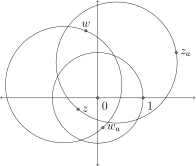
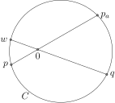
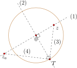
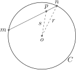

Recall, the unit 2-sphere \(\mathbb{S}^2\) consists of all points \((a,b,c)\) in \(\mathbb{R}^3\) for which \(a^2 + b^2 + c^2 = 1\text{,}\) and \(\mathbb{S}^2\) may be mapped onto the extended plane by the stereographic projection map \(\phi: \mathbb{S}^2 \to
\mathbb{C}^+\) defined by
\begin{equation*}
\phi(a,b,c) =
\begin{cases}\frac{a}{1-c}+\frac{b}{1-c}i \amp \text{ if \(c \neq 1\); } \\
\infty \amp \text{ if \(c=1\). }
\end{cases}
\end{equation*}
Two distinct points on a sphere are called diametrically opposed points if they are on the same line through the center of the sphere. Diametrically opposed points on the sphere are also called antipodal points. If \(P = (a,b,c)\) is on \(\mathbb{S}^2\) then the point diametrically opposed to it is \(-P=(-a,-b,-c)\text{.}\) It turns out that \(\phi\) maps diametrically opposed points of the sphere to points in the extended plane that satisfy a particular equation.
Definition6.1.1
Two points \(z\) and \(w\) in \(\mathbb{C}^+\) are called antipodal points if they satisfy the equation
\begin{equation*}
z \cdot \overline{w} = -1.
\end{equation*}
Furthermore, we set 0 and \(\infty\) to be antipodal points in \(\mathbb{C}^+\text{.}\) If \(z\) and \(w\) are antipodal points, we say \(w\) is antipodal to \(z\text{,}\) and vice versa.
Each \(z\) in \(\mathbb{C}^+\) has a unique antipodal point, \(z_a\text{,}\) given as follows:
\begin{equation*}
z_a =\begin{cases}-1/\overline{z} \amp \text{ if \(z \neq 0, \infty\); } \\
\infty \amp \text{ if \(z = 0\); } \\
0 \amp \text{ if \(z=\infty\). }
\end{cases}
\end{equation*}
Since \(-\frac{1}{\overline{z}} = -\frac{1}{|z|^2}z\text{,}\) we note that \(z_a\) is a scaled version of \(z\text{,}\) so that \(z\) and \(z_a\) live on the same Euclidean line through the origin. Again, since 0 and \(\infty\) are antipodal points, this notion extends to all points \(z \in \mathbb{C}^+\text{.}\)
Lemma6.1.2
Given two diametrically opposed points on the unit sphere, their image points under stereographic projection are antipodal points in \(\mathbb{C}^+\text{.}\)
First note that the north pole \(N = (0,0,1)\) and the south pole \(S = (0,0,-1)\) are diametrically opposed points and they get sent by \(\phi\) to \(\infty\) and 0, respectively, in \(\mathbb{C}^+\text{;}\) so the lemma holds in this case.
Now suppose \(P = (a,b,c)\) is a point on the sphere with \(|c| \neq 1\text{,}\) and \(Q = (-a,-b,-c)\) is diametrically opposed to \(P\text{.}\) The images of these two points under stereographic projection are
which reduces to \(-1\) since \(a^2+b^2+c^2=1\text{.}\)
Thus, diametrically opposed points on the sphere get mapped via stereographic projection to antipodal points in the extended plane.
A cline \(C\) in \(\mathbb{C}^+\) is called a great circle if whenever \(z\) is on \(C\text{,}\) so is its antipodal point \(z_a\text{.}\) Some great circles are drawn in Figure 6.1.3. We note that the unit circle is a great circle in \(\mathbb{C}^+\) as is any line through the origin.

Figure6.1.3 Five great circles in \(\mathbb{C}^+\text{.}\)
To construct a great circle in the extended plane, it is enough to ensure that it passes through one particular pair of antipodal points. This can be proved with the aid of stereographic projection, but an alternative proof is given below, one that does not leave the plane, but rather uses a proposition from Book III of Euclid's Elements.
Lemma6.1.4
If a cline in \(\mathbb{C}^+\) contains two antipodal points then it is a great circle.
Suppose \(C\) is a cline in \(\mathbb{C}^+\) containing antipodal points \(p\) and \(p_a\text{,}\) and suppose \(q\) is any other point on \(C\text{.}\) We show \(q_a\) is also on \(C\text{.}\)
If \(C\) is a line, it must go through the origin since \(p\) and \(p_a\) are on the same line through the origin. Since \(q\) and \(q_a\) are also on the same line through the origin, if \(q\) is on \(C\) then \(q_a\) is too.
If \(C\) is a circle, then the origin of the plane is in the interior of \(C\) and the chord \(pp_a\) contains the origin, as pictured in Figure 6.1.5. The line through \(q\) and the origin intersects \(C\) at another point, say \(w\text{.}\) We show \(w=q_a\text{.}\)

Figure6.1.5 A cline \(C\) containing a pair of antipodal points \(p\) and \(p_a\) must be a great cirlce. In the figure, \(w = q_a\text{.}\)
The intersecting chords theorem (Book III, Proposition 35 of Euclid's Elements) applied to this figure tells us that \(|p|\cdot |p_a| = |q|\cdot |w|\text{.}\) (We leave the proof to Exercise 6.1.7. The proof essentially follows that of Lemma 3.2.7, except we consider a point inside the given circle.) As antipodal points, \(|p|\cdot|p_a| = 1\text{,}\) and it follows that \(|w|=1/|q|\text{.}\) Since the segment \(wq\) contains the origin, it follows that \(w\) is the point antipodal to \(q\text{.}\)
The following theorem tells us that inversions will play a central role in elliptic geometry, just as they do in hyperbolic geometry.
Theorem6.1.6
Reflection of \(\mathbb{S}^2\) about a great circle corresponds via stereographic projection to inversion about a great circle in \(\mathbb{C}^+\text{.}\)
We work through the relationship in one case, and refer the interested reader to [10] for the general proof.
Example6.1.7Reflection of \(\mathbb{S}^2\) about the equator
We argue that reflection of \(\mathbb{S}^2\) about the equator corresponds to inversion about the unit circle.
First of all, stereographic projection sends the equator of \(\mathbb{S}^2\) to the unit circle in \(\mathbb{C}^+\text{.}\) Now, reflection of \(\mathbb{S}^2\) across the equator sends the point \(P = (a,b,c)\) to the point \(P^* = (a,b,-c)\text{.}\) We must argue that \(\phi(P)\) and \(\phi(P^*)\) are symmetric with respect to the unit circle.
If \(|c| = 1\) then \(P\) and \(P^*\) correspond to the north and south poles, and their image points are 0 and \(\infty\text{,}\) and these points are symmetric with respect to the unit circle. So, assume \(|c|
\neq 1\text{.}\) Notice that
Again, the last equality holds because \(a^2 + b^2 + c^2 = 1\text{.}\) Thus, \(\phi(P)\) and \(\phi(P^*)\) are symmetric with respect to the unit circle. It follows that inversion in the unit circle, \(i_{\mathbb{S}^1}\text{,}\) corresponds to reflection of \(\mathbb{S}^2\) across the equator, call this map \(R\text{,}\) by the equation
\begin{equation*}
i_{\mathbb{S}^1} \circ \phi = \phi \circ R.
\end{equation*}
We end the section with one more feature of the stereographic projection map. The proof can be found in [10].
Theorem6.1.8
The image of a circle on \(\mathbb{S}^2\) via stereographic projection is a cline in \(\mathbb{C}^+\text{.}\) Moreover, the pre-image of a circle in \(\mathbb{C}^+\) is a circle on \(\mathbb{S}^2\text{.}\) The pre-image of a line in \(\mathbb{C}^+\) is a circle on \(\mathbb{S}^2\) that goes through \(N= (0,0,1)\text{.}\)
In fact, one can offer a constructive proof of this theorem. A circle on \(\mathbb{S}^2\) can be represented as the intersection of \(\mathbb{S}^2\) with a plane \(Ax + By + Cz + D = 0\) in 3-dimensional space. One can show that the circle in \(\mathbb{S}^2\) defined by \(Ax + By + Cz + D = 0\) gets mapped by \(\phi\) to the cline \((C+D)(u^2 + v^2)+2Au + 2Bv + (D-C)=0\) in the plane (described via \(u,v\) cartesian coordinates); conversely the circle \(|w - w_0| = r\) in \(\mathbb{C}\) gets mapped by the inverse function \(\phi^{-1}\) to the circle in \(\mathbb{S}^2\) given by the plane \(-2x_0 x - 2y_o y + (1 - |w_0|^2+r^2)z + (1 + |w_0|^2
- r^2) = 0\) where \(w_0 = x_0 + y_0i\text{.}\)
Example6.1.9The image of a circle under \(\phi\)
Consider the circle on \(\mathbb{S}^2\) defined by the vertical plane \(x = -\frac{1}{2}\text{.}\) In standard form, this plane has constants \(A = 2, B = C = 0,\) and \(D = 1\text{,}\) so the image under \(\phi\) is the circle
Constructing an antipodal point. Suppose \(z\) is a point inside the unit circle. Prove that the following construction, which is depicted in Figure 6.1.11, gives \(z_a\text{,}\) the point antipodal to \(z\text{:}\) (1) Draw the line through \(z\) and the origin; (2) draw the line through the origin perpendicular to line (1), and let \(T\) be on line (2) and the unit circle; (3) construct the segment \(zT\text{;}\) (4) construct the perpendicular to segment (3) at point \(T\text{.}\) Line (4) intersects line (1) at the point \(z_a\text{.}\) Use similar triangles to prove that \(z_a = -\frac{1}{|z|^2}z.\)

Figure6.1.11 Constructing the antipodal point to \(z\text{.}\)
2
Explain why any great circle in \(\mathbb{C}^+\) either contains 0 or has 0 in its interior.
3
Characterize those great circles in \(\mathbb{C}^+\) that are actually Euclidean lines.
4
Prove that reflection of \(\mathbb{S}^2\) across the great circle through (0,0,1), (0,0,-1) and (1,0,0) corresponds via stereographic projection to reflection of \(\mathbb{C}^+\) across the real axis.
5
Determine the image under \(\phi\) of the circle \(z = 1/2\) on the unit sphere.
6
Explain why reflection of \(\mathbb{S}^2\) across any longitudinal great circle (i.e. a great circle through the north and south poles) corresponds to reflection of \(\mathbb{C}^+\) across a line through the origin.
7
Prove the intersecting chords theorem in two parts.
a. Suppose \(C\) is a circle with radius \(r\) centered at \(o\text{.}\) Suppose \(p\) is a point inside \(C\) and a line through \(p\) intersects \(C\) at points \(m\) and \(n\text{,}\) as pictured below. If we let \(s = |p-o|\) prove that \(|p-m|\cdot|p-n|=r^2-s^2\text{.}\)

b. Prove the intersecting chords theorem: If \(mn\) and \(ab\) are any two chords of \(C\) passing through a given interior point \(p\text{,}\) then